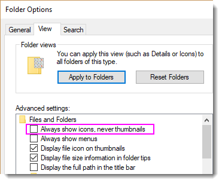

FAQ-1161 Was soll ich tun, wenn das Vorschaubild der Projektdatei nicht im Windows Explorer angezeigt wird?
OPJU-Preview-Image-Not-Display
Letztes Update: 14.12.2022
Die Ansicht der großen und extragroßen Symbole des Windows Explorers zeigt ein Vorschaubild des letzten aktiven Diagramms, bevor die Projektdatei gespeichert wurde.
Wenn Sie das Vorschaubild im Windows Explorer nicht sehen, stellen Sie bitte als Erstes sicher, dass das Kontrollkästchen Immer Symbole statt Miniaturansichten anzeigen im Dialog Explorer-Optionen deaktiviert ist (mit Menü Datei: Optionen)
- 
Wenn Immer Symbole statt Miniaturansichten anzeigen deaktiviert ist, versuchen Sie bitte, OPJHandler.dll folgendermaßen zu registrieren:
- Klicken Sie, um das Startmenü von Windows zu öffnen.
- Geben Sie
cmd in das Suchfeld ein. Die Befehlseingabe wird angezeigt.
- Klicken Sie mit der rechten Maustaste auf sie und wählen Sie Als Administrator ausführen.
- Geben Sie im aufgerufenen Befehlsfenster Folgendes ein:
regsvr32 "<Origin Program Folder>\OPJHandlers.dll"
Wenn Sie zum Beispiel Origin 2023 im Standardpfad installiert haben, können Sie Folgendes eingeben:
regsvr32 "C:\Program Files\OriginLab\Origin2023\OPJHandlers.dll"
- Wenn eine Bestätigungsnachricht angezeigt wird, dass die Aktion erfolgreich war, starten Sie den PC neu.

|
Hinweise:
Wenn das Vorschaubild nach obiger Lösung noch immer nicht gezeigt wird, prüfen Sie bitte, ob eine Anti-Virus-Software wie Kaspersky OPJHandler.dll blockiert.
|